Inhalt Index DeskTop Bronstein

 Lineare Integralgleichungen Singuläre Integralgleichungen Singuläre Integralgleichungen mit Cauchy-Kernen
Lineare Integralgleichungen Singuläre Integralgleichungen Singuläre Integralgleichungen mit Cauchy-Kernen


heißt CAUCHY-Integral über  . Für 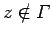 existiert das Integral im gewöhnlichen Sinne und stellt eine holomorphe Funktion dar. Es gilt 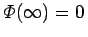. Für 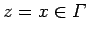 sei unter (11.89a) der CAUCHYsche Hauptwert
. Für 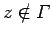 existiert das Integral im gewöhnlichen Sinne und stellt eine holomorphe Funktion dar. Es gilt 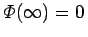. Für 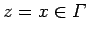 sei unter (11.89a) der CAUCHYsche Hauptwert
verstanden. Das CAUCHY-Integral  ist von S+ bzw. S- stetig auf
ist von S+ bzw. S- stetig auf  fortsetzbar. Die Grenzwerte bei Annäherung von z an 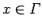 werden mit 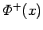 bzw. 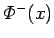 bezeichnet. Es gelten die Formeln von PLEMELJ und SOCHOZKI:
fortsetzbar. Die Grenzwerte bei Annäherung von z an 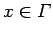 werden mit 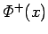 bzw. 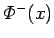 bezeichnet. Es gelten die Formeln von PLEMELJ und SOCHOZKI: